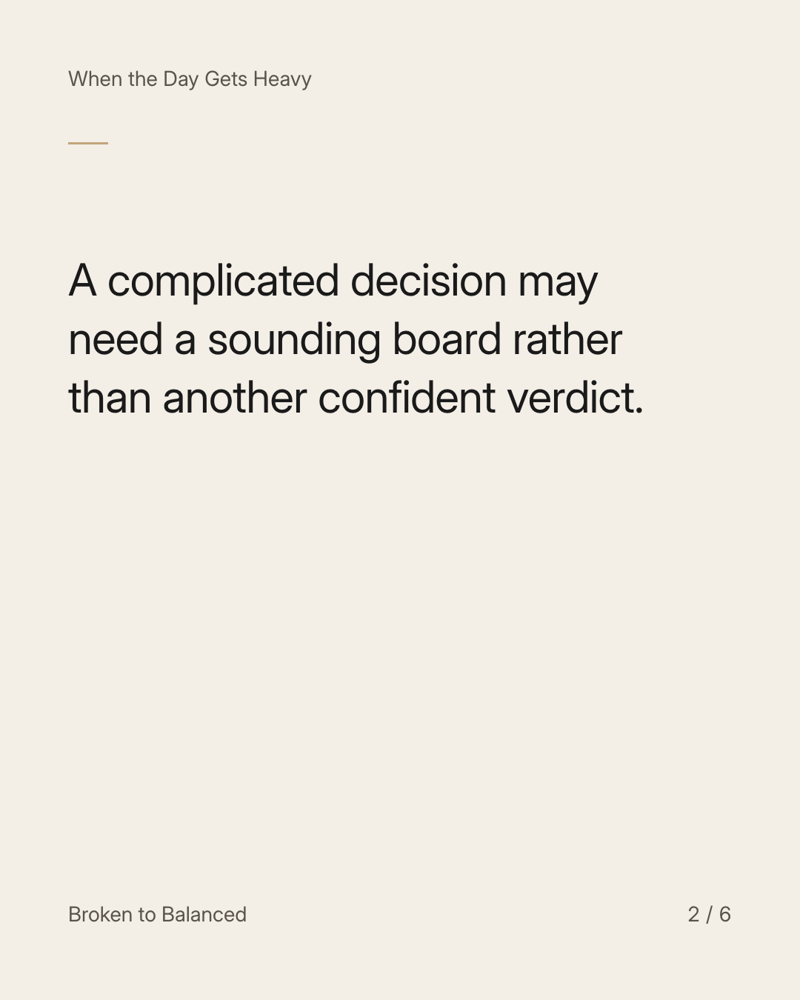
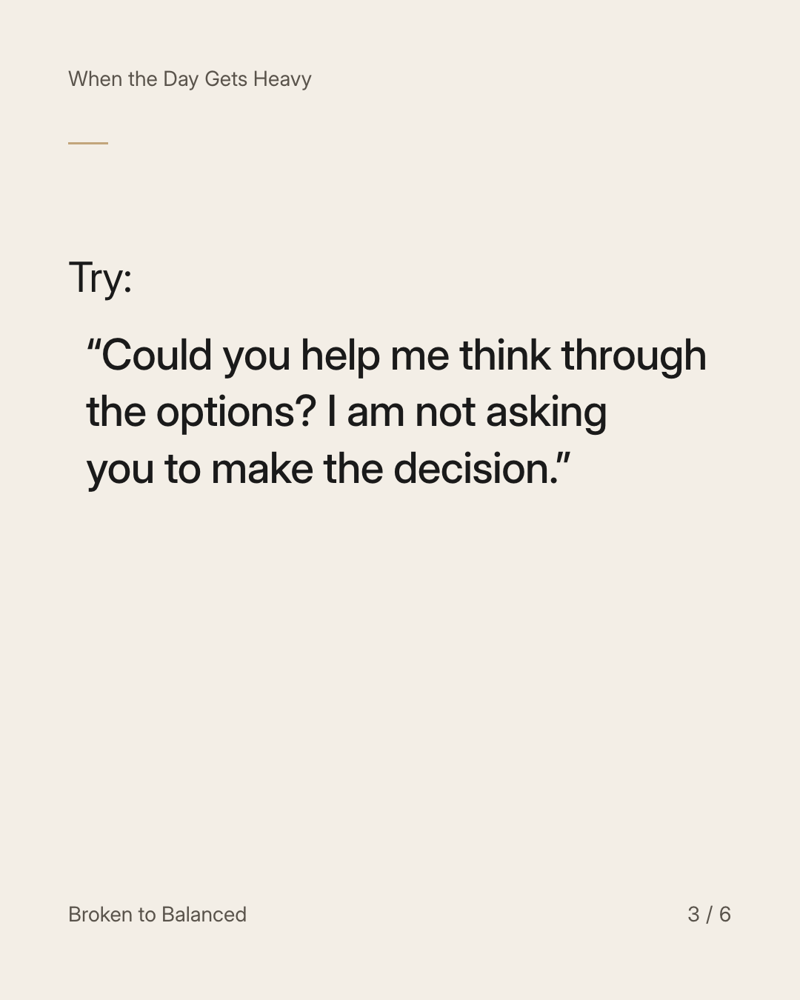
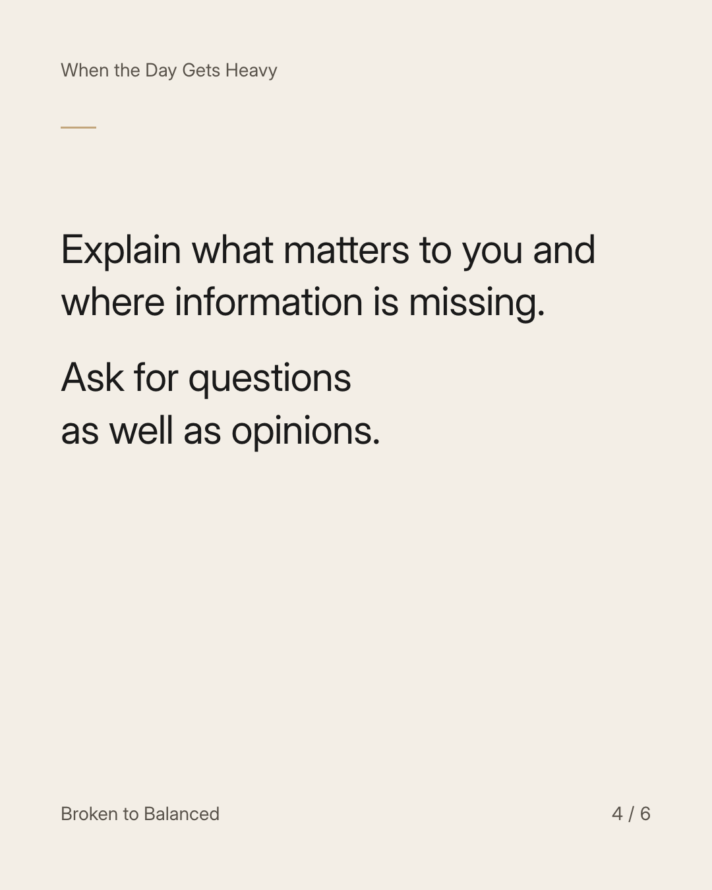
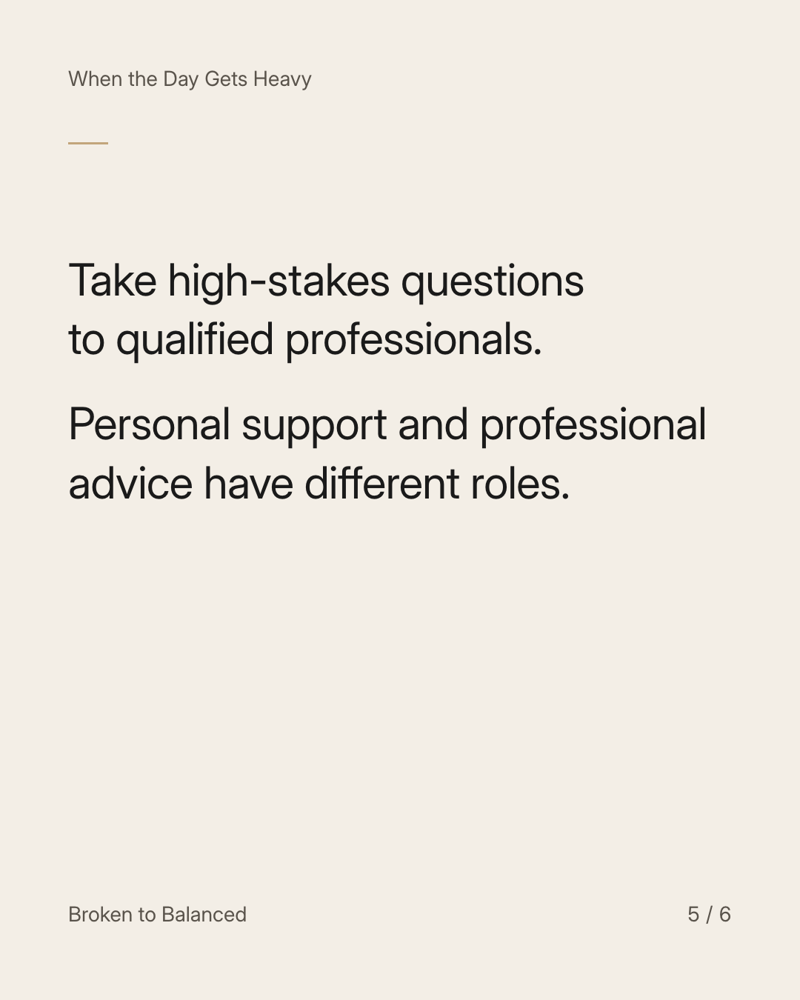
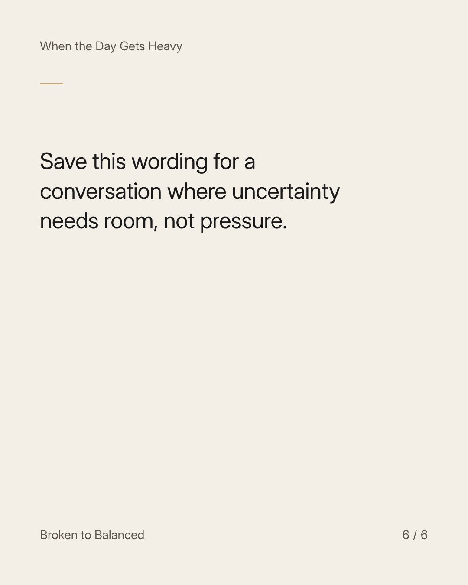

Exact text and accessibility text
You can tell someone you are unsure without asking them to choose for you.
Slide 1 of 6. You can tell someone you are unsure without asking them to choose for you.


Exact text and accessibility text
A complicated decision may need a sounding board rather than another confident verdict.
Slide 2 of 6. A complicated decision may need a sounding board rather than another confident verdict.


Exact text and accessibility text
Try: “Could you help me think through the options? I am not asking you to make the decision.”
Slide 3 of 6. Try: “Could you help me think through the options? I am not asking you to make the decision.”


Exact text and accessibility text
Explain what matters to you and where information is missing. Ask for questions as well as opinions.
Slide 4 of 6. Explain what matters to you and where information is missing. Ask for questions as well as opinions.


Exact text and accessibility text
Take high-stakes questions to qualified professionals. Personal support and professional advice have different roles.
Slide 5 of 6. Take high-stakes questions to qualified professionals. Personal support and professional advice have different roles.


Exact text and accessibility text
Save this wording for a conversation where uncertainty needs room, not pressure.
Slide 6 of 6. Save this wording for a conversation where uncertainty needs room, not pressure.
Exact caption
Plain-text fallback: select and copy the caption.